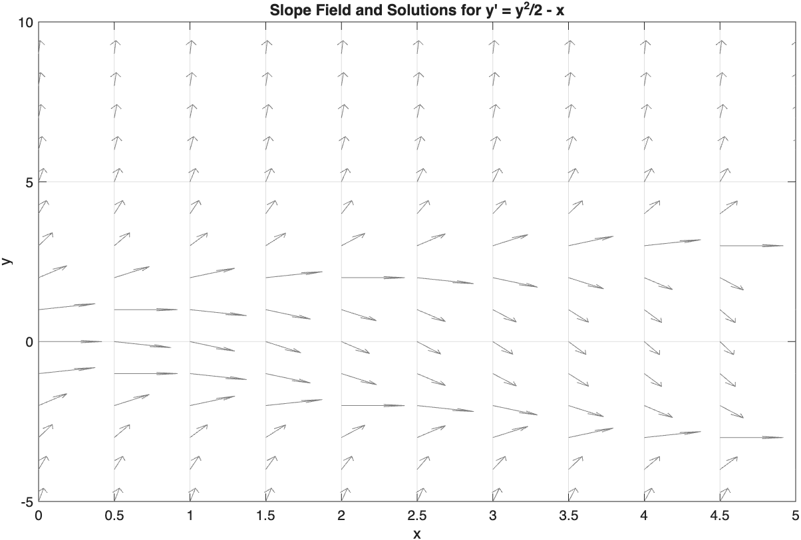

To understand that direction fields are a useful way of analyzing a differential equation from a geometric point of view, especially since not all differential equations can be solved analytically.
To understand that an autonomous equation is a differential equation of the form \(y'=f(y)\) and that phase lines can be used to analyze autonomous differential equations.
To understand equilibrium solutions to a differential equation \(y'=f(y)\) are those solutions given by \(f(y)=0\) for all \(y\text{.}\) In particular, an equilibrium solution is either a sink, source, or node.
As we’ve mentioned previously, not all differential equations -- even first-order equations -- can be solved exactly. Our first goal is always to find a formula for \(y(x)\text{.}\) But when we can’t, it’s nice to have a backup plan. This is where the ability to sketch a graph of the solution, either by hand or with the help of a computer, can be a lifesaver.
If we view the differential equation \(y'=F(x,y)\) as a formula for the slope of a tangent line to a solution curve, we can approximate the graph of a solution curve. For example, if we consider the equation \(y'=x+y\text{,}\) then a solution curve will have a slope of 2 at the point \((1,1)\text{.}\) We can use this information to obtain a geometric description of the solutions to the equation.
can be viewed as a formula for the slope of a function \(y=y(x)\text{.}\) Geometrically, the equation tells us that at any point \((x_0,y_0)\text{,}\) the slope of a solution curve is given by \(F(x_0,y_0)\text{.}\) Suppose that our differential equation is defined on the rectangle \(R=\{(x,y) \mid a\le x\le b, c\le y\le d\}\) in the \((x,y)\)-plane. Let \(y(x)\) be a solution curve for \(y'=F(x,y)\) that passes through the point \((x_0,y_0)\text{.}\) Then the differential equation tells us the slope of this solution curve at \((x_0,y_0)\text{.}\) We can indicate this on the \((x,y)\)-plane by drawing a short line segment at the point \((x_0,y_0)\) with slope \(F(x_0,y_0)\text{.}\) Thus we can obtain a direction field or slope field for the differential equation. A solution curve must be tangent to its slope field at every point.
For example, consider the differential equation \(y'=y^2/2-x\text{.}\) The slope field for this equation is given in Figure 1.3.1 along with a few solution curves.
Although direction fields can be tedious to compute using pencil and paper, we can easily generate direction fields for any differential equation with the use of computer software. Most computer algebra systems, including MATLAB, have facilities for generating and graphing direction fields. For instance, the following MATLAB code will generate the slope field for \(y'=y^2/2-x\text{.}\) While we’ve already seen some code in the previous section that will generate solution curves, we will go over the commands to do that thoroughly at the end of this section.
% 1. Define the differential equation as an anonymous function
f = @(x, y) y .^2 ./2 - x;
% 2. Set up the grid for the slope field
x_range = 0:0.5:5;
y_range = -5:1:10;
[X, Y] = meshgrid(x_range, y_range);
% Calculate the slopes (dx = 1, dy = f)
dx = ones(size(X));
dy = f(X, Y);
% Normalize vectors so all slope lines are the same length
L = sqrt(dx.^2 + dy.^2);
dx_norm = dx ./ L;
dy_norm = dy ./ L;
% 3. Plot the slope field
figure;
quiver(X, Y, dx_norm, dy_norm, 0.5, 'Color', 'blue');
hold on;
% 4. Format the graph
xlabel('x');
ylabel('y');
title('Slope Field for dy/dx = y^2/2 - x');
axis([x_range(1) x_range(end) y_range(1) y_range(end)]);
grid on;
hold off;
The logistic growth equation \(P'=rP\left(1-\frac{P}{N}\right)\) is autonomous because there are no instances of the independent time variable \(t\) on the right-hand side of the equation.
First-order autonomous equations are among the easiest to analyze; in fact, their solutions have fairly limited types of behavior. Suppose that \(y'=F(y)\) and that \(F(r)=0\) for some real number \(r\text{.}\) Then the constant function \(y(x)\equiv r\) is a solution of the differential equation since both \(F(y)\) and \(y'\) are identically zero.
A constant function \(y(x)\equiv r\text{,}\) such that \(F(r)=0\) is called an equilibrium solution of the autonomous differential equation \(\frac{dy}{dx} = F(y)\text{.}\)
Since the slopes only depend on \(y\text{,}\) a slope field for an autonomous equation \(y'=F(y)\) is completely determined once the slopes along any vertical line \(x=x_0\) are plotted. In fact, if \(F(y)\) is defined and continuous for all \(y\text{,}\) the behavior of the solutions of the equation can be determined from the slope lines along the \(y\)-axis. This leads to the construction of what is called a phase line for the autonomous differential equation. (See Figure 1.3.8.)
A phase line gives us a one-dimensional picture of our solutions’ increase or decrease. To produce a phase line, we can use the same techniques we used back in first-semester calculus to draw the intervals of increase and decrease for a function \(F\text{.}\)
Note1.3.9.To draw a phase line for the equation \(y'=F(y)\).
Find all real numbers \(r_1\lt r_2\lt \cdots\) such that \(F(r_i)=0\text{,}\) and label these values on a vertical \(y\)-axis. These points represent the equilibrium solutions. We assume first that the function \(F\) has finitely many zeros; if not, a phase line can always be drawn using a finite interval on the \(y\)-axis.
For each interval \((-\infty, r_1), (r_1,r_2), \dots\) pick any value \(y=\overline{y}\) in the interval and determine whether \(F(\overline{y})\) is positive or negative. Draw an arrow on the axis, in the given interval, pointing up if \(F(\overline{y})\) is positive and pointing down if \(F(\overline{y})\) is negative. Note that if \(F\) is a continuous function, it will have constant sign between any two zeros.
A solution with initial value satisfying \(r_i\lt y(0) \lt r_{i+1}\) is monotonically increasing if the arrow points up or monotonically decreasing if the arrow is pointing down. If \(F(y)\) satisfies the conditions of the Existence and Uniqueness Theorem, then the solution must remain bounded between the two equilibrium values, since they are solutions and solutions cannot intersect.
We will draw a phase line for the autonomous equation \(y'=0.5(y-1)(y+2)\text{.}\) We first find the equilibrium solutions by setting the right-hand side of the equation to zero. This quickly yields the two solutions \(y\equiv 1\) and \(y\equiv -2\text{.}\) These are shown plotted on the phase line in Figure 1.3.11.
These two points split the phase line into three intervals: \((-\infty, -2), (-2, 1)\) and \((1,\infty)\text{.}\) All we need to do is examine one point in each interval in order to draw the arrows correctly on the phase line.
so we draw an upward pointing arrow on the phase line below \(-2\text{.}\) We interpret this as follows: suppose have the initial condition \(y(0)=-3\) with our differential equation. The solution curve through this point must have a positive slope, but it can never cross the equilibrium solution \(y\equiv -2\text{.}\) (Why not?) Therefore, it must increase monotonically and approach \(-2\) as a horizontal asymptote as \(x\to\infty\text{.}\)
For the interval \((-2,1)\text{,}\) we can choose \(y=0\) and quickly get that \(F(0)=0.5(0-1)(0+2) = 0.5(-1)(2) = -1 \lt 0\) so we draw a downward pointing arrow on the interval \((-2,1)\text{.}\) This means that a solution curve with \(-2\lt y(0)\lt 1\) must be monotonically decreasing and bounded between -2 and 1. Therefore it must approach -2 asymptotically as \(x\to\infty\text{.}\)
Lastly, for the interval \((1,\infty)\text{,}\) we can choose \(y=2\) and obtain \(F(y) = 0.5(2-1)(2+2) = 0.5(1)(4) = 2\gt 0\text{.}\) This means that we draw an upward pointing arrow above 2 on the phase line, meaning that any solution curve with initial condition \(y(0)\gt 2\) will increase monotonically. Whether it exists for all \(x\) or has a vertical asymptote at some positive value of \(x\) cannot be determined geometrically.
The phase line contains almost all of the information needed to construct the graphs of solutions shown in Figure 1.3.12. It does not contain information on how fast the curves approach their asymptotes, or where the curves have inflection points, however. This information, which does depend on \(x\text{,}\) is lost in going to the phase line representation, but note that we did not need to solve the differential equation analytically in order to draw the phase line.
We set the right-hand side of the equation to 0 and solve: \(2y(1-y)=0 \Longrightarrow y\equiv 0 \text{ or } y\equiv 1\text{.}\) So we put points on our phase line at 0 and at 1. This splits our line into three intervals: \((-\infty,0), (0, 1)\) and \((1,\infty)\text{.}\)
We know that equilibrium solutions of autonomous equations are constant solutions; their graphs are horizontal lines in the plane. But what happens if our initial conditions are not on the equilibrium line, but just really close?
We can see in Figure 1.3.12 that if solutions start initially close enough to the equilibrium solution \(y\equiv -2\text{,}\) they will tend toward it as \(x\to\infty\text{.}\) On the phase line (Figure 1.3.11), we can see that the arrows on either side of \(-2\) point toward \(-2\text{.}\) An equilibrium solution of this type is called a sink and is said to be a stable equilibrium.
On the other hand, solutions starting close to \(y=1\) all tend to move away from this solution as \(x\) increases. The phase line has arrows both pointing away from 1. An equilibrium solution of this type is said to be a source and is called an unstable equilibrium.
It is possible to have an equilibrium point on the phase line where an arrow on one side points toward the equilibrium and an arrow on the other side points away. Such an equilibrium is called a node. It is semi-stable in the sense that if a solution starts on one side of the equilibrium, it will tend towards it and if it starts on the other side, it will move away as \(x\to\infty\text{.}\)
We could certainly do the same analysis we did before, interval by interval, to get the arrows to point the correct way. Another way which we learned in first-semester calculus would be to graph \(F(y)\) and see where it is positive or negative. (See Figure 1.3.15.)
It is important to realize that this graph is not the graph of the solution curves. We only use this graph to determine whether the arrow between two equilibria points up or down. We can see that \(F(y)\) is positive between all pairs of equilibrium points except 0 and 3; therefore, all of the arrows point up except the one between 0 and 3.
Once the arrows are drawn, it is easy to see that -1 is a node, 0 is a sink, and 3 is a source. Some solutions of this equation are shown in Figure 1.3.16.
For each of the differential equations in Exercise Group 1.3.4.1–6, plot the direction field on the integer coordinates \((x,y)\) of the rectangle \(-2 \lt x \lt 2\) and \(-2 \lt y \lt 2\) by drawing a short line of the appropriate slope.
Find the equilibrium solutions for each of the differential equations in Exercise Group 1.3.4.8–13. Draw the phase line for each equation and classify each equilibrium solution as a sink, a source, or a node.
Each of the differential equations in Exercise Group 1.3.4.14–19 has several initial conditions specified. Sketch the solution curves that satisfy the initial conditions. Sketch your solutions for each equation on the same pair of axes.
Consider the differential equation \(y'=F(y)\text{,}\) where the graph of \(F(y)\) is given in Exercise Group 1.3.4.20–21. Draw the phase line for each equation and classify each equilibrium solution as a sink, a source, or a node.
As we’ve seen, a slope field for a differential equation \(y=F(x,y)\) is comprised of lots of arrows. An arrow at a point \((x_0,y_0)\) is drawn with slope \(F(x_0,y_0)\text{.}\) Computer algebra systems such as MATLAB or Octave are useful for drawing slope fields because they will draw tens or hundreds of arrows without complaint.
In weaponry, a group of arrows is called a quiver, and so MATLAB uses the quiver command to draw an entire set of arrows for a slope field. Let us plot the direction field for the differential equation \(y'=y^2/2-x\text{.}\)
% Define the differential equation function: y' = y^2/2 - x
f = @(x, y) (y.^2)/2 - x;
% 1. Create the grid for the slope field
x_vec = 0:0.5:5;
y_vec = -5:1:10;
[X, Y] = meshgrid(x_vec, y_vec);
% 2. Calculate slopes and normalize vectors for uniform arrow length
S = f(X, Y);
L = sqrt(1 + S.^2);
U = 1 ./ L;
V = S ./ L;
% 3. Plot the slope field
figure;
quiver(X, Y, U, V, 0.4, 'Color', [0.5 0.5 0.5]);
hold on;
% 4. Polish the plot layout
xlabel('x');
ylabel('y');
title("Slope Field and Solutions for y' = y^2/2 - x");
axis([0 5 -5 10]);
grid on;
hold off;

Let’s discuss the MATLAB code. (We won’t do this too often.) The first thing to know is that MATLAB deals mainly with lists of numbers. So in the first line, where we define the function f, we use the . before the exponent to tell MATLAB to take a list y and square each element of it.
Next, we make the lists of values x and y which will make up the coordinates where we will plot the arrows for the slope field. We have x go from 0 to 5 in increments of 0.5, and y go from -5 to 10 in increments of 1. The meshgrid command combines the x and y lists into a matrix of coordinates [X,Y].
We then form a matrix S of the values of the slope functions at each value [X,Y]. Some of these numbers will be small; others will be large. This would mean the arrows in the slope field would be all different sizes. Therefore, we normalize the lengths of the arrows by computing their magnitudes L, then dividing the components of the slope by the magnitudes.
At last, we draw the slope field. The figure command opens up the graph window in MATLAB. (Always start drawing a graph with that command.) We then use the quiver command to draw the slope field. The command draws an arrow at the point (X,Y) of length U in the \(x\)-direction and length V in the \(y\)- direction. We then ask MATLAB to reduce each arrow to 0.4 of its computed length so that the arrows don’t crash into each other. (Change that 0.4 to 0 to see what happens.) We then use the hold on so that we can add on to the graph. Without it, MATLAB would erase what we have already if we continue to use graphing commands.
We do the final polishing of the graph; that is, we make it look nice by adding in axis labels, a title, set the axes for the graph, and put in a background grid.
Now let us find a numerical solution to the equation using the command ode45. This involves 4th- and 5th-order Runge-Kutta methods and returns a numerical solution (a table of values). We can add the code for this into our previous program to produce the slope field along with a few solutions.
% Define the differential equation function: y' = y^2/2 - x
f = @(x, y) (y.^2)/2 - x;
% 1. Create the grid for the slope field
x_vec = -3:0.5:5;
y_vec = -5:1:10;
[X, Y] = meshgrid(x_vec, y_vec);
% 2. Calculate slopes and normalize vectors for uniform arrow length
S = f(X, Y);
L = sqrt(1 + S.^2);
U = 1 ./ L;
V = S ./ L;
% 3. Plot the slope field
figure;
quiver(X, Y, U, V, 0.4, 'Color', [0.5 0.5 0.5]);
hold on;
% 4. Solve and plot curves for each initial condition
init_conds = [-1/4, 1/2, 3/2];
x_span = [0, 5]; % Forward integration span
% Colors for each trajectory
colors = ['r', 'g', 'b'];
for i = 1:length(init_conds)
y0 = init_conds(i);
% Forward integration from x = 0 to x = 5
[xf, yf] = ode45(f, [0, 5], y0);
% Backward integration from x = 0 to x = -3 (to show full curve)
[xb, yb] = ode45(f, [0, -3], y0);
% Combine and sort trajectories so they plot cleanly
x_total = [flipud(xb); xf];
y_total = [flipud(yb); yf];
% Plot the trajectory line
plot(x_total, y_total, colors(i), 'LineWidth', 2, ...
'DisplayName', sprintf('y(0) = %.1f', y0));
% Mark the initial condition point
plot(0, y0, [colors(i) 'o'], 'MarkerFaceColor', colors(i), 'HandleVisibility', 'off');
end
% 5. Polish the plot layout
xlabel('x');
ylabel('y');
title("Slope Field and Solutions for y' = y^2/2 - x");
axis([-3 5 -5 10]);
grid on;
legend('Slope Field', 'Location', 'best');
hold off;
If we have a slope field in hand for a differential equation, it is important to be able to draw a reasonable approximation to a solution curve that passes through a given point.
Given each direction field shown below, draw a solution curve that fulfills the given initial condition (that is, a solution curve that passes through the given point).